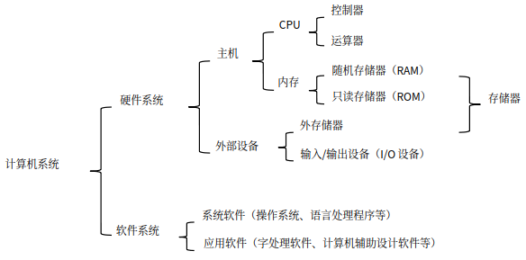
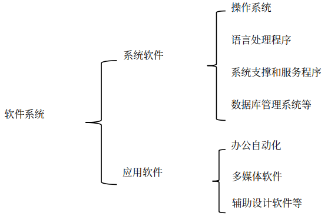
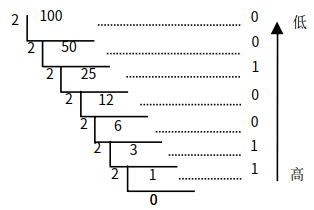
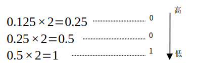
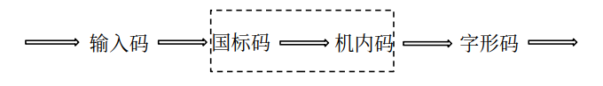

计算机基础
计算机的诞生
ENIAC
ENIAC 是在第二次世界大战，美国军方为了精确计算新式火炮的弹道轨迹而研制的。
- 1946 年 2 月 14 日诞生
- 世界上第一台电子数字积分计算机
- 美国宾夕法尼亚大学
- 17468 个真空电子管、1500 个继电器、70000 只电阻以及其他各类电子元件，功率 150 千瓦
- 占地约 170 平方米，重达 30 吨
- 使用十进制表示数据，没有使用存储程序和程序控制原理
EDVAC
- 1945 年由冯·诺伊曼、莫奇利、埃克特等提出，1951 年完成
- 电子离散变量自动计算机
- 使用二进制表示数据
- 采用存储程序和程序控制
- 由运算器、控制器、存储器、输入设备、输出设备 5 部分组成
EDSAC
- 1949 年 5 月 6 日首次试运行成功
- 电子延迟存储自动计算器
- 使用二进制表示数据
- 采用存储程序和程序控制
- 由运算器、控制器、存储器、输入设备、输出设备 5 部分组成
计算机的发展
| 分代 | 电子元件 | 运算速度 |
|---|---|---|
| 第一代 (1946-1957) |
电子管 | 几千次 |
| 第二代 (1958-1964) |
晶体管 | 几十万次 |
| 第三代 (1965-1970) |
中小规模集成电路 | 几百万次 |
| 第四代 (1971 年至今) |
大规模/超大规模集成电路 | 上亿次甚至亿亿次 |
计算机的发展趋势
- 巨型化
- 微型化
- 网络化
- 智能化
计算机的特点
- 运算速度快
- 计算精度高
- 具有记忆和逻辑判断功能
- 具有自动执行功能
计算机的分类
按照性能划分
- 巨型机
- 大型机
- 小型机
- 微型机
- 工作站
在 2017 年 6 月进行的世界前 500 强高性能计算机（Top500）测试中，我国国家并行计算机工程技术研究中心研发的“神威· 太
湖之光”巨型机排名第一，峰值速度达到每秒 12.5 亿亿次浮点运算。
按照处理的数据划分
- 数字计算机
- 模拟计算机
- 数模混合计算机
目前日常生活应用的计算机多为数字计算机
按照功能用途划分
- 通用计算机
- 专用计算机
计算机的应用
-
科学计算
-
过程检测与控制
-
数据处理
-
计算机辅助系统
计算机辅助系统指通过人机对话，使计算机辅助人们进行设计、加工、计划和学习等工作
类别 简写 计算机辅助设计 CAD 计算机辅助制造 CAM 计算机辅助测试 CAT 计算机辅助教学 CAI 计算机辅助教育 CBE 计算机管理教学 CMI 计算机集成制造系统 CIMS 计算机辅助工程 CAE -
多媒体
-
生活工作和学习
计算机系统
- 由硬件和软件构两大系统组成
- 计算机硬件系统包括主机(由 CPU 和内存组成)和外部设备(由外存储器、输入/输出设备)组成
- 计算机软件系统是计算机所需的各种程序、数据及其相关文件的集合，可分为系统软件和应用软件两类

计算机硬件系统
- 运算器
- 控制器
- 存储器
- 输入设备
- 输出设备
微型计算机的主要性能指标
- 主频
- 字长
- 存储容量
- 存取周期
- 运算速度
运算速度是一项综合性的性能指标，单位有 MIPS（每秒百万（106）条指令）和 BIPS（每秒十亿（109）条指令）等
计算机软件系统
软件是指计算机运行所需的程序、数据和有关文档的总和。没有安装任何软件的计算机称为“裸机”，无法完成任何工作。计算机软件系统通常分为系统软件和应用软件两大类

程序设计语言
| 语言种类 | 可读性 | 可移植性 | 执行速度 | 能否被计算机直接执行 |
|---|---|---|---|---|
| 机器语言 | 差 | 差 | 快 | 能 |
| 汇编语言 | 较好 | 差 | 较快 | 不能 |
| 高级语言 | 好 | 好 | 慢 | 不能 |
用高级语言编写的程序称为源程序，是源代码和数据构成的文件。目标程序是指源程序 经过翻译程序翻译后的二进制目标代码文件。可执行文件是链接程序将目标代码链接后生成的可以执行的文件。
数据单位
- 位(bit,b)
- 字节(Byte,B)
字节是计算机中用来表示存储空间大小的基本单位。在计算机中，通常将 8 个二进制组成一个存储单元，称为字节，用大写字母 B 表示。计算机的主存储器容量、磁盘容量都是以字节为单位表示的。
存储器可容纳的二进制信息量称为存储容量。目前，度量存储容量的基本单位是字节，此外，常用的存储容量单位还有 KB（千字节）、MB（兆字节）、GB（吉字节）和 TB（太字节）。存储容量计量单位之间的换算关系如下：
1B=8b
1KB=1024B=210B
1MB=1024KB=220B
1GB=1024MB=230B
1TB=1024GB=240B,其中 1024=210。
- 字(word)
字通常取字节的整倍数，是计算机进行数据存储和处理的运算单位。字和计算机中的字长概念相关，字长是指计算机同时处理信息的二进制的位数，具有这一长度的二进制数则被称为计算机中的一个字。计算机按照字长可以分为 8 位、16 位、32 位和 64 位机，例如，在 64 位机中，一个字则含有 64 个二进制位。
数制转换
概念
数制是用一组固定的数字和一套统一的规则来表示数目的方法。其中，十进制主要作用于计算机的输入输出，实现人机交互；二进制是计算机内部所采用的数制；八进制和十六进制是为了方便书写或显示二进制，被看成二进制的缩写形式。
基数和权
一个数无论采用何种进位制表示，都包含两个基本要素：基数和权。
- 基数
基数是指各种进位计数制中允许选用基本数码的个数。例如，十进制的数码有 0~9 共 10 个，因此十进制的基数为 10。 - 权
每个数码所表示的数值等于该数码乘以一个与数码所在位置相关的常数，这个常数称为权或权值。权的大小以基数为底、数码所在的位置的序号为指数的整数次幂。
例如，一个十进制数 3643.76 可表示为：
3643.76=3×103+6×102+4×101+3×100+7×10-1+6×10-2
在这个数中，有些相同的数字由于处在不同的位置，他们代表的数值大小也不同，如千位的 3 和个位的 3 大小就不一样。各位数值的大小由权值决定，该数的权值从左到右分别是 103、102、101、100、10-1、10-2，此表示也称为位权展开式。
数值的表示
| 进位制 | 基数 | 基本符号(数码) | 权 | 表示 |
|---|---|---|---|---|
| 二进制 | 2 | 0,1 | 2 | B |
| 八进制 | 8 | 0-7 | 8 | O |
| 十进制 | 10 | 0-9 | 10 | D |
| 十六进制 | 16 | 0-9, A-F | 16 | H 或 0x |
数制转换
r 进制转换为十进制数
对于任意 r 进制数，均可以先写出它的位权展开式，然后在按十进制进行计算即可将其转换为十进制数。
例如：
(1111.11)B=1×23+1×22+1×21+1×20+1×2-1+1×2-2=15.75
(543.2)O=5×82+4×81+3×80+2×8-1=355.25
(A10B.8)H=10×163+1×162×0+161+11×160+8×16-1=41227.5
十进制数转换为 r 进制
十进制数的整数部分和小数部分在转换时需作不同的计算，分别求值后在组合。
整数部分：采用“除 r 取余，先余为低，后余为高”法。即用十进制的整数反复地除以 r，记下每次得到的余数，直到商为 0，然后将所得到的余数倒排即为 r 进制各位的数码。
小数部分：采用“乘 r 取整，先整为高，后整为低”法。即用十进制的小数乘 r，得到一个乘积，将乘积的整数部分取出来，将乘积的小数部分再乘以 r，重复以上过程，直到小数部分为 0，然后将所得到的整数正排即为转换结果。
例如：将十进制数 100.125 转换为二进制数。先对整数 100 进行转换：

由上得出，100D=1100100B。
对小数部分 0.125 进行转换：

由上得出，0.125D=0.001B
最终得出，100.125D=1100100.001B。
二进制、八进制、十六进制数的相互转换
由于二进制、八进制、十六进制之间存在特殊关系：23=81，24=161，即 1 位八进制数相当于 3 位二进制数，1 位十六进制数相当于 4 位二进制数，因此转换方法就比较容易。
八进制和十六进制不能直接互相转换
二进制数与八进制数的相互转换
二进制数转换成八进制数的方法是：将二进制数从小数点开始，对二进制整数部分向左每 3 位分成一组，不足 3 位的向高位补 0 凑成 3 位；对二进制小数部分向右每 3 位分成一组，不足 3 位的向低位补 0 凑成 3 位。每一组 3 位二进制数，分别转换成八进制数码中的一个数字，全部连接起来即可。
例如：11111101.1011B
| 二进制三位分组 | 011 | 111 | 101. | 101 | 100 |
|---|---|---|---|---|---|
| 转换为八进制数 | 3 | 7 | 5. | 5 | 4 |
因此 11111101.1011B=375.54O
将八进制数转换成二进制数
将每一位八进制数转换成相应的 3 位二进制数，依次连接起来即可。
例如：375.54O
| 八进制数 | 3 | 7 | 5. | 5 | 4 |
|---|---|---|---|---|---|
| 转换为二进制数 | 011 | 111 | 101. | 101 | 100 |
因此 375.54O=11111101.1011B
二进制数与十六进制数的相互转换
二进制数与十六进制数的转换，与二进制数和八进制数的转换类似，只不过是每 4 位二进制数与 1 位十六进制数的相互转换。
例如：11111101.1011B
| 二进制四位分组 | 1111 | 1101. | 1011 |
|---|---|---|---|
| 转换为十六进制数 | F | D. | B |
将十六进制数转换成二进制数
将每一位十六进制数转换成相应的 4 位二进制数，然后依次连接起来即可。
例如：11111101.1011B
| 十六进制数 | F | D. | B |
|---|---|---|---|
| 转换为二进制数 | 1111 | 1101. | 1011 |
因此 FD.BH=11111101.1011B
字符的编码表示
西文字符编码
西文字符编码最常用的是 ASCII（美国信息交换标准代码）字符编码，该编码标准已经被国际标准化组织（ISO）指定为国际标准，是国际上使用最广泛的一种字符编码。标准的 ASCII 码采用 7 位二进制编码，它可以表示 27 即 128 个字符。
计算机的内部存储与操作常以字节为单位，即 8 个二进制为单位，因此一个 ASCII 码在计算机内实际是用一个字节（8 位）表示，正常情况下，最高位为 0。在需要奇偶校验时，这一位可用于存放奇偶效验的值，此时称这一位为效验位。
ASCII 编码，编码范围从 0000000B-1111111B。
编码值 0~31（0000000-0011111）不对应任何可印刷字符，通常为控制符，用于计算机通信中的通信控制或对设备的功能控制；编码值 32（0100000）是空格字符，编码值 127（1111111）是删除控制 DEL 码；其余 94 个字符为可印刷字符。在这些字符中，从 0~9、从 A~Z、从 a~z 都是顺序排列，逐次增加 1 的，有利于计算得出 ASCII 码值，并且小写字符比对应大写字符的码值大 32，这有利于大、小写字母之间的编码转换。
由上 ASCII 码值表述可知，控制符<空格字符<数字字符<大写字母<小写字母。
汉字字符编码
计算机中汉字的表示也是用二进制编码，根据应用目的的不同，汉字编码分为输入码（外码）、国标码、机内码和字形码。汉字编码的转换过程如下图：

汉字输入码
汉字输入码又称为汉字外码，是一种用计算机标准键盘的不同排列组合来对汉字的输入进行的编码。目前汉字输入编码的研究和发展迅速，已有上百种汉字输入编码法。衡量一个输入编码法的好坏应有以下要求：编码短，可以减少击键的次数；重码少，可以实现盲打；好学好记，便于学习和掌握。但现在还没有一种全部符合上述要求的汉字输入编码方法。目前常用的汉字编码主要分成为以下三类。
- 音码
主要是以汉语拼音为基础的编码方案，如全拼、双拼、简拼和智能 ABC 等。音码的重码率高，单字输入速度慢，但容易掌握。 - 型码
型码主要是根据汉字的特点，按汉字固有的形状，把汉字先拆分成部首，然后进行组合，代表有五笔字形法、郑码输入法等。型码重码较少，单字输入速度快，但学习和掌握较难。 - 数字编码
常用的是国标区位码，用数字串输入一个汉字。区位码是将国家标准局公布的 6763 个两级汉字分为 94 个区，每个区分 94 位，实际上把汉字集排列成二维数组的形式，行为区，列为位，每个汉字在数组中的下标就是区位码。区码和位码各用两位十进制数表示，因此输入一个汉字需要按键 4 次。例如“中”字位于第 54 区 48 位，区位码为 5448.数字编码输入的优点是无重码，与内部编码的转换比较方便，缺点是代码难以记忆。
为了提高输入速度，输入方法现已走向了智能化，智能化方向是基于模式识别的语音识别输入，手写输入或扫描输入。
汉字国标码
汉字国标码是我国 1980 年发布的《信息交换用汉字编码字符集—基本集》（代号为 GB2312-80），是中文信息处理的国家标准，也称汉字交换码，简称 GB 码。国标码对汉字进行编码时，每个汉字的编码占两个字节。国标码使用了每个字节的低位 7 位进行编码，每个字节最高位仍为“0”，最大可容纳 128×128=16384 个汉字集字符。根据统计，把最常用的 6763 个汉字分成两级：一级汉字有 3755 个，按拼音字母排序排列；二级汉字有 3008 个，按偏旁部首排列排序。
汉字机内码
汉字在计算机内部使用的编码就是汉字机内码，又称汉字内码。每个汉字内码占用两个字节，并且每个字节的最高位为 1，这是为了避免汉字的内码与英文字符编码（ASCII 码）发生冲突，容易区分汉字编码与英文字符编码，同时为了用尽可能少的存储空间来表示尽可能对的汉字而做出的约定。
汉字机内码的计算公式：
汉字机内码 = 汉字国标码+8080H = 区位码+A0A0H
汉字字形码
汉字字形码也叫汉字字模或汉字输出码，用于汉字在显示屏或打印机输出。汉字字形码通常有两种表示方法：点阵式和矢量式。
点阵式表示字形时，将汉字图像一样置于网状方格上，每格是存储器中的一个位（bit）。例如，16×16 点阵是在纵向 16 点、横向 16 点的网状方格上写一个汉字，有笔划的格对应 1，无笔划的格对应 0。点阵式包括 16×16 点阵、24×24 点阵、32×32 点阵、48×48 点阵等，点阵越大，描述的字形越细致美观，质量越高，所占存储空间也越大。在计算机中，8 个二进制位组成一个字节，它是度量空间的基本单位。一个 16×16 点阵的字形码需要 16×16/8=32 字节的存储空间，即
点阵字形码所占字节数=点阵行数 × 点阵列数/8
矢量式是描述汉字字形的轮廓特征，当要输出汉字时，字形和大小与计算机的分辨率无关，可以产生高质量的汉字输出，并节省存储空间。用矢量式记录的字体可以任意放缩甚至变形，而不用担心会出现锯齿状的边缘。
汉字字形数字化后，以二进制文件的形式存储在存储器中，所有汉字的输出码就构成了汉字字形库，简称汉字库。
BCD 码
计算机内部采用二进制表示和处理数据。因此，在计算机中输入和输出数据时，就要进行从十进制到二进制和从二进制到十进制的转换处理。人们通常采用把十进制数的每一位分别写成二进制数形式的编码，称为 BCD 码。
BCD 编码的方法很多，通常采用的是 8421 编码，其方法是用四位二进制数表示一位十进制数，自左至右每一位对应的权是 8、4、2、1.四位二进制数有 0000~1111 十六个状态，只取 0000~1001 十种状态，而 1010~1111 六个状态没有意义。
| 十进制数 | 8421 |
|---|---|
| 0 | 0000 |
| 1 | 0001 |
| 2 | 0010 |
| 3 | 0011 |
| 4 | 0100 |
| 5 | 0101 |
| 6 | 0110 |
| 7 | 0111 |
| 8 | 1000 |
| 9 | 1001 |
| 10 | 0001 0000 |
计算机信息安全
等待补充。
计算机病毒
等待补充。
计算机多媒体技术基础
等待补充。
 wechat
wechat alipay
alipay